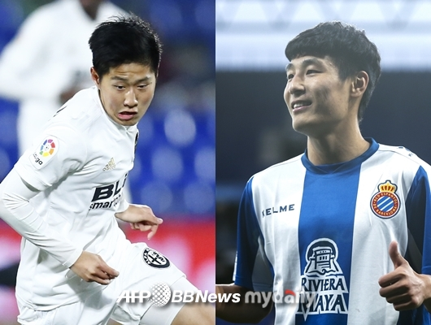

[마이데일리 = 안경남 기자]
한국 축구의 미래 이강인(18,발렌시아)와 중국의 축구 스타 우레이(27,에스파뇰)의 맞대결이 성사될까. 발렌시아는 18일 오전 0시 15분(한국시간) 스페인 발렌시아의 홈구장 캄프 데 메스타야에서 에스파뇰과 2018-19시즌 스페인 프리메라리가 24라운드를 치른다. 경기 전 소집 명단에 공개된 가운데, 이강인이 19명에 포함됐다. 최근 2경기 연속 출전 명단에서 제외됐던 이강인은 지난 주중 셀틱과의 유럽축구연맹(UEFA) 유로파리그 32강 1차전에서 교체 명단에 이름을 올렸다. 비록 경기 출전은 불발됐지만, 2경기 연속 다시 명단에 포함되면서 출전 가능성을 높였다. 다만 경쟁이 치열하다. 부상에서 돌아온 게데스가 건재하고 체리셰프도 대기한다. 4-4-2 포메이션에서 이강인이 뛰려면 두 명보다 앞서야 한다. 쉽지 않은 상황이다. 중국의 호날두로 불리는 우레이도 에스파뇰 명단에 포함됐다. 아시안컵 이후 중국 슈퍼리그를 떠나 스페인 무대에 도전장을 내민 우레이는 곧바로 출전 기회를 잡으며 기대를 높이고 있다. 우레이 효과는 기대 이상이다. 에스파뇰의 우레이 유니폼 판매가 크게 늘었고, 관련 상품 문의도 쏟아지고 있다. 이런 가운데, 이강인과의 맞대결이 성사될지 축구 팬들의 시선이 모아진다.
